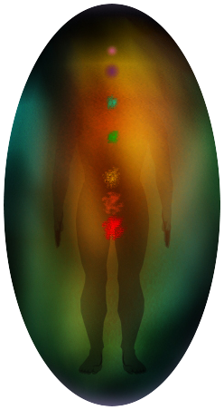
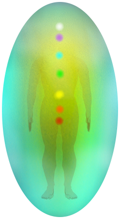

Если на вашей ауре имеются пробои и оттоки, то теряется ваша энергия, а это негативно отражается и на самочувствии и на настроении, и на вашем здоровье и даже на финансовом положении.
Преследуют неудачи, депрессии, мучает бессонница, проблемы в семейных отношениях и на работе, рушится личная жизнь, не устраивает финансовое положение, слабое здоровье? Спрашивали ли вы себя почему это происходит и как это можно изменить?
наставник
Мирра
- - Чакролог
- - Психотерапевт
- - Световой косметолог
- - Прогрессор Космоэнергетики
- - Магистр сакральной энергии Саху
Мирра
- - Чакролог
- - Психотерапевт
- - Световой косметолог
- - Прогрессор Космоэнергетики
- - Магистр сакральной энергии Саху
Что такое кокон ауры?
Кокон ауры - это энергетические тела человека, находящиеся вокруг физического тела. Здоровая аура оберегает человека от различного энергетического мусора.
Аура - это наше свечение, наша защита и индикатор нашего настроения и здоровья!
Ауру нужно периодически очищать, так как во взаимодействии с другими людьми, а также различными местами она загрязняется и утончается. На ней могут быть оттоки энергии, пробои, а также искажения.
Идеальное состояние ауры - 7 метров вокруг вас, ровной и овальной формы
Причины возникновения разрывов и повреждений тонких тел:
- Чужая зависть.
- Магические повреждения (порчи, сглазы, шепотки).
- Злость и агрессия других людей.
- Повреждения с прошлых воплощений.
- Депрессии, апатии, стрессы.
- Обиды, душевные раны, сильные эмоциональные переживания.
- Оттоки к другим людям.
- Энергетический вампиризм.
кокон ауры
до чистки
после чистки
Если вы нашли у себя или у своих близких признаки повреждений тонких тел, и хотите узнать в порядке ли ваша энергетика, то можете заказать энергетическую диагностику, которая выявит состояние ваших энергетических тел.
При обнаружении энергетических проблем, мы можем провести чистку энергетики и избавить вас от всех оттоков, деструктивных программ и других видов повреждений.
Чистка энергетики позволит восстановить и здоровье и подправить психическую энергию.
Последствия поврежденного кокона ауры
Если болеет энергетическое тело, то болеет и физическое тело. Все болезни, которыми заболевает человек, сначала видны во втором энергетическом теле - эфирном.
Если вовремя предпринять меры, то болезнь до физического тела не дойдет. Если же уже есть болезнь в физическом теле, например, болезни почек, то в районе почек на эфирном теле будут разрывы. Энергетическое тело просто не справилось самостоятельно с данным заболеванием.
Наши услуги по чистке кокона ауры:

- 1. Чистка энергетических тел от негативных структур - чужой зависти, злости, плохих пожеланий, соударений впоследствии ссор.
- 2. Закрытие оттоков энергии.
- 3. Устранение пробоев и трещин энергетических тел.
- 4. Устранение разрывов ауры.
- 5. Восстановление тонких тел ауры и их гармонизация.
3 300 руб.
- 1. Чистка энергетических тел от негативных структур - чужой зависти, злости, плохих пожеланий, соударений впоследствии ссор.
- 2. Закрытие оттоков энергии.
- 3. Устранение пробоев и трещин энергетических тел.
- 4. Устранение разрывов ауры.
- 5. Восстановление тонких тел ауры и их гармонизация.
- 7. Увеличение потока энергии.
5 000 руб.

- 1. Чистка энергетических тел от негативных структур - чужой зависти, злости, плохих пожеланий, соударений впоследствии ссор.
- 2. Закрытие оттоков энергии.
- 3. Устранение пробоев и трещин энергетических тел.
- 4. Устранение разрывов ауры.
- 5. Восстановление тонких тел ауры и их гармонизация.
- 6. Снятие порчи.
- 7. Увеличение потока энергии.
- 8. Расчищение верхней и нижней подключки, удаление блоков.
- 9. Увеличение потока энергии.
9 700 руб.
Отзывы о нашей работе
Мирра, спасибо Вам за труд, за потраченные усилия, время, за Ваше мастерство. Ваш профессионализм виден во всем: и в подходе к работе, и в ответах на вопросы, и в общении...Да, с Вами общаться очень приятно...пусть и дистанционно, но лично Я чувствовала от Вас очень добрую, теплую энергетику...Это редкость, когда Человек находит время и не раздраженным отвечает на вопросы...А Я немало вопросов задавалаСотрудничать с Вами просто удовольствие Очень рада, что нашла случайно попала на Вашу страницу еще раз убедилась, что 'случайности не случайны' Желаю Вам здоровья, успехов и всех благ
Дария
Мирра, хочется говорить,говорить Вам слова благодарности.... Спасибо Вам за то,что вы делаете. Уверена,что та случайность,что я напала на Вас, на самом деле не случайность. Просто была поражена свои ощущениям- состояние наполненности и спокойной радости! Очень необычное ощущение. В том числе и от осознания того что есть результат,который позволит жить в нормальном энергетическом состоянии. БлагоДарю
Айжан
Мирра, очень хочу написать отзыв про мою чистку и восстановление: когда начали чистку у меня начался жуткий гайморит, прям слизь из носа кусками вываливалась, видимо гадость всякая таким способом ещё выходила. состояние кстати было в целом нормальное, но перепады настроения были иногда. ноги раньше болели постоянно, крутило их прям, во время работы со мной совсем перестали болеть, сейчас право опять подкручивает их. Энергии кажется стало больше, давно я столько не гуляла зимой, а тут в праздники с ребёнком каждый день и причём по 5 и больше часов) мужчин всегда вокруг было много, но все не те, сейчас появился хороший. Во время чистки и восстановления были сумасшедшие дни: болела, учёба, работа, думала не вывезу, но все ок, ещё до ночи домашку делать сил хватало. Сессию без троек сдала. Так что изменения идут, я этому рада, благодарю Вас!!!
Кристина
Мирра, благодарю за чистку и восстановление ауры . Оттоки и пробои закрыты, так как наконец-то чувствую себя наполненной энергией, усталость, непонятные чувства страха и не безопасности прошли. Работы с чакрами теперь даются легко и просто. На физическом уровне энергия чакр чувствуется ярко-выраженно: вибрации, жар, яркие насыщенные цвета Огромное спасибо
Асемгуль
Мирра, добрый день! Прошла у вас чистку кокона и нахожусь на неделе практики на Муладхару, честно говоря изначально я немного скептически отнеслась к чистке. Но когда после нескольких дней после начала вашей работы с моей энергетикой мне поступило предложение по работе, я поняла что изменения происходят. На эмоциональном фоне я тоже почувствовала измерения, я стала очень спокойная,как будто выше всех переживаний и неурядиц, выше зла и всякой нечести. У меня впервые за много лет появилась уверенность в себе,что я могу изменить свою жизнь и что мне все под силу. Мирра,спасибо вам большое что открываете нам глаза и освещает дорогу в наше светлое будущее
Наталья
Я хочу выразить огромную благодарность за чистку ауры ! Много негатива ушло и много отрицательных эмоций ушло! Вещи которые раньше раздражали и выводили из себя стали безразличны и не важны, просыпаюсь утром и хочется радоваться и любить весь мир!) Стала ощущать себя чем то большим, чем просто собой живущей в зависимости от каких либо вещей, людей и обстоятельств) будто мне раньше что то мешало , а теперь все стало светлее хотя никакие внешние обстоятельства не изменились, изменилось мое отношение )
Дарья
Добрый день, прошел чистку ауры по настоянию своей жены. Она тоже чистила и обучается на чакрах у Мирры. Скажу честно, сначала отнесся довольно скептически. Но когда через неделю после чистки у меня появилось 3 новых клиента я думал, что совпадение, и не задумывался. Спустя еще неделю клиентов стало еще больше. Работы у меня прибавилось, и я совершенно не уставший и даже настроение хорошее. Стало и физически легче и финансово. Спасибо. Я рад, что прошел эту процедуру.
Николай
Доброе утро!Мирра,спасибо огромное вам за чистоту моей ауры! В первый день чистки снился сон, что я в красивом райском местечко и на меня сверху льется водопад. Я ощущала как воды смывает с меня все плохое. Утром я проснулась в прекрасном настроении и на работе даже сказали, что я посветлела. Состояние бодрости и энергичности продолжается, я очень рада, что смогла все таки позволить себе эту чистку. Мирра, вы творите чудеса, благодарю вас!
Светлана
Мирра, пишу свои ощущения после читски ауры! У меня стало больше сил, я теперь не валюсь с ног по вечерам. Гуляю с ребенком и успеваю делать все дела. Стало меньше раздражительности, перестала реагировать на людей в транспорте, меньше агрессии стало. Заметила, что стала даже песни подпевать, когда занимаюсь делами. Вы мне очень помогли, спаисбо вам огромное! Благодарю за чуткость и отзывчивость и вашу доброту!
Анастасия
Добрый день! Прошла чистку кокона ауры и осталась весьма довольна. Рекомендую, если начали замечать, что дела не идут и много негативных эмоций. Я очень тонко душевный человек и меня легко довести до слез. Иногда плачу даже от усталости. Мирра, сейчас мне стало легче намного, даже иногда весело. Спасибо вам большое.
Людмила